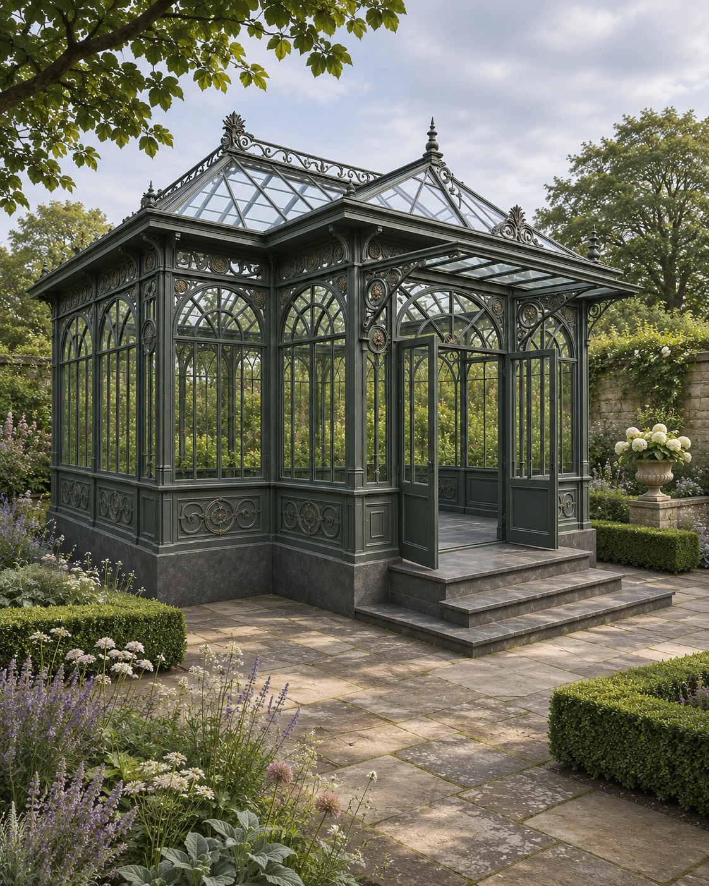
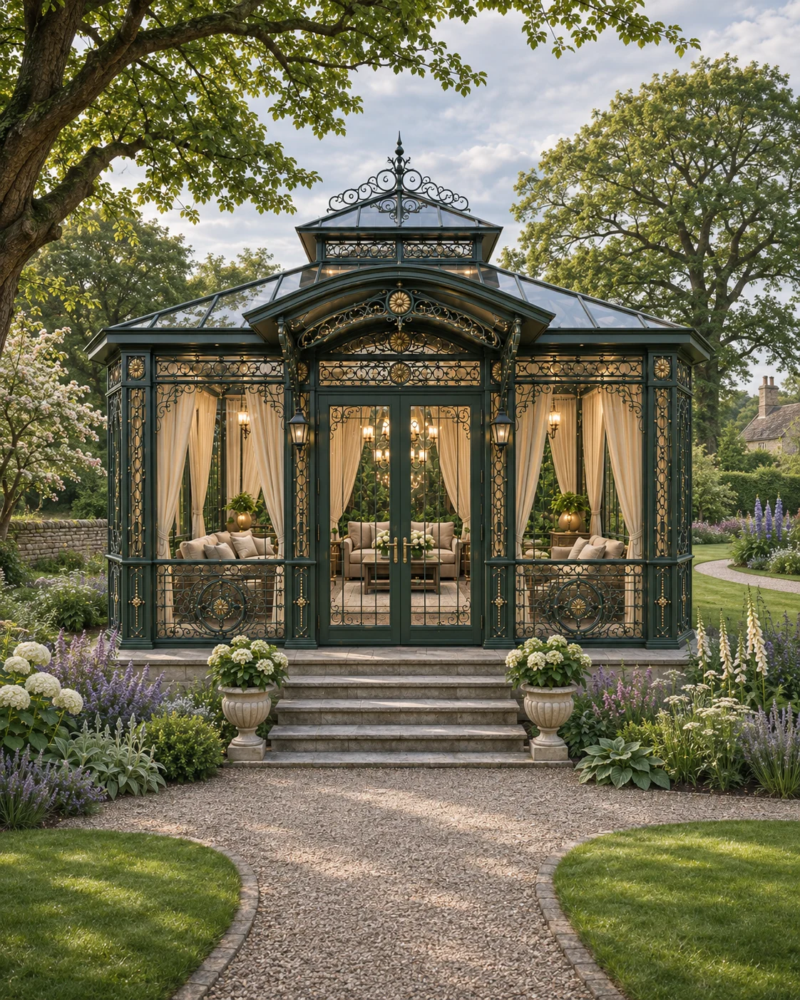
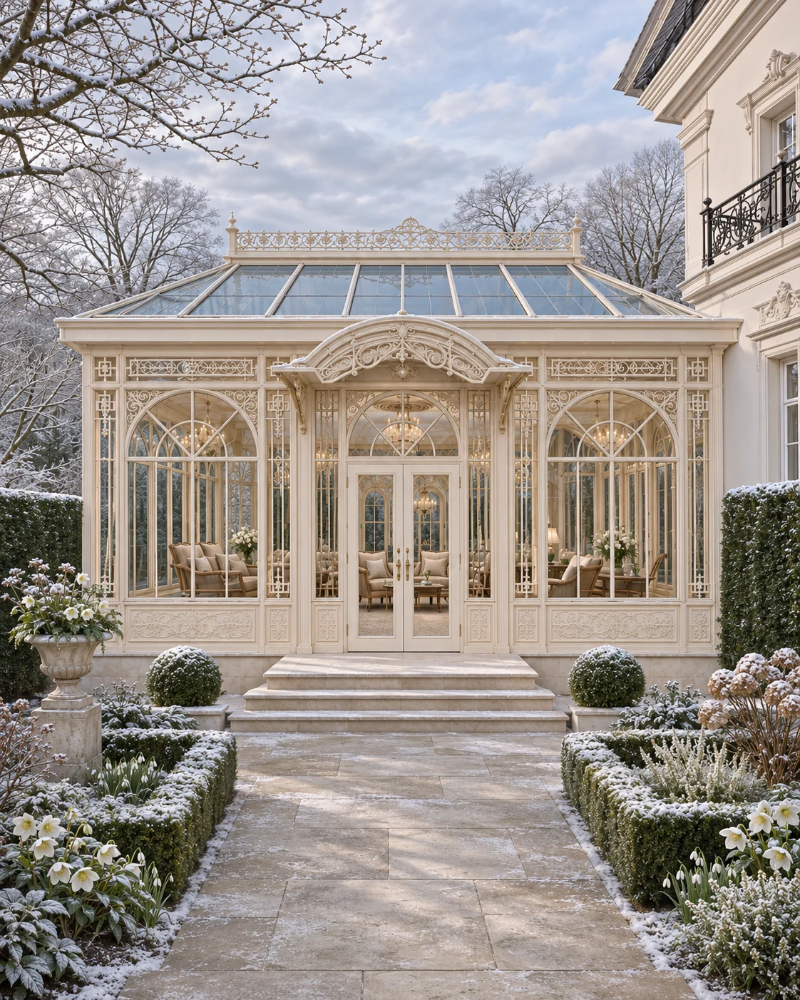
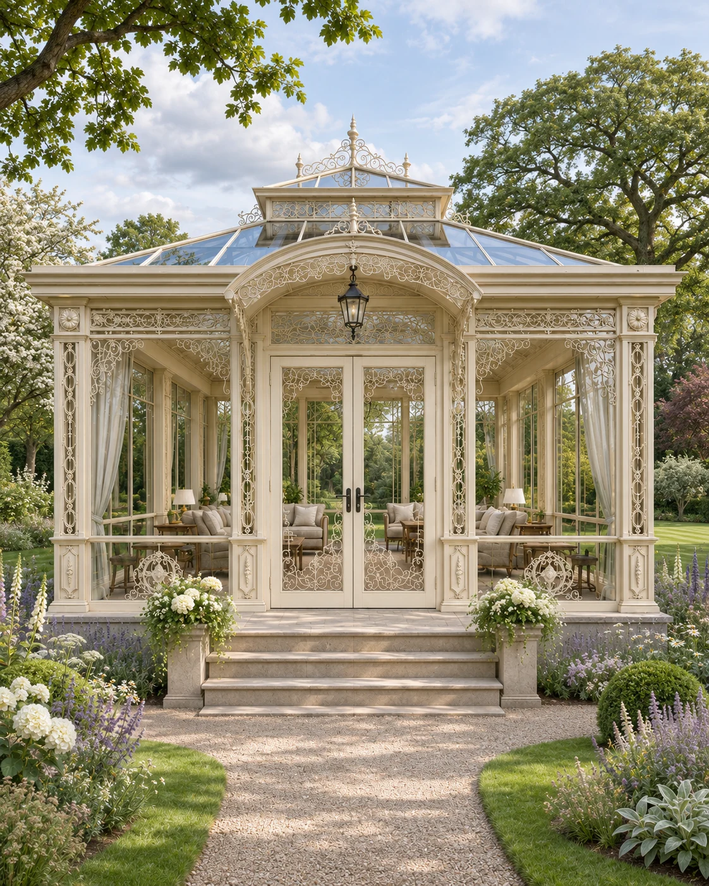
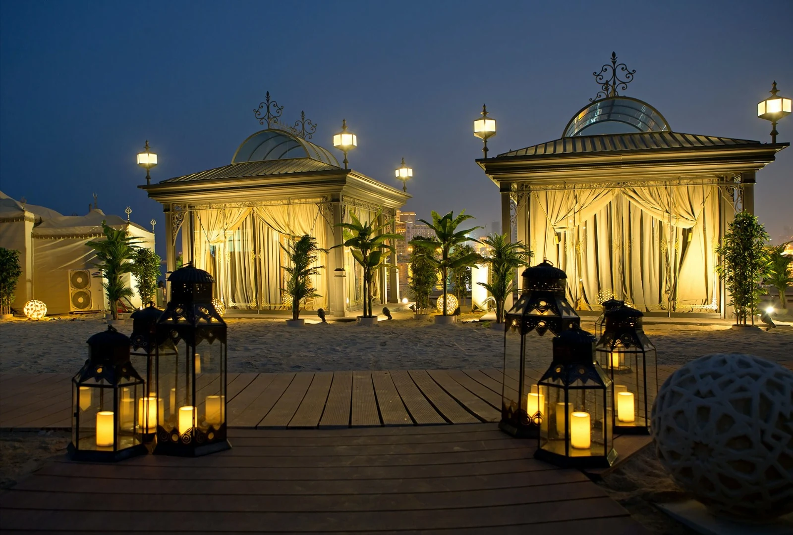
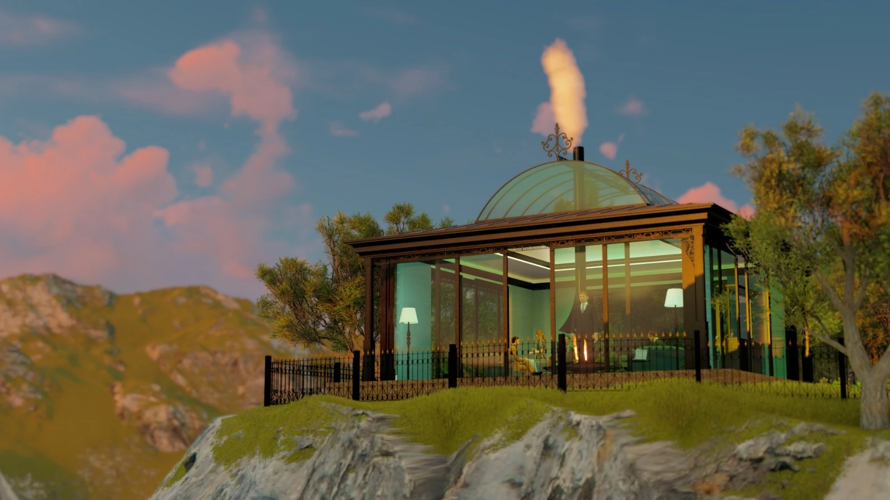

Classical Garden Pavilions
Classical Garden PavilionsCream Arched Garden Pavilion
Design collection
A pale ornamental garden pavilion with repeated arched glazing sits within mature planting. The entrance and roof details create a clear front elevation.
Explore the designMarla Garden · Design visualisation
Arched glazing, ornamental rooflines and distinctive garden entrances. Compare pale, grey and dark architectural frames, with different roof forms and glazing rhythms.
14 design families
Classical Garden PavilionsDesign collection
A pale ornamental garden pavilion with repeated arched glazing sits within mature planting. The entrance and roof details create a clear front elevation.
Explore the design Classical Garden Pavilions
Classical Garden PavilionsDesign collection
A pale garden salon has a pronounced entrance and a glazed roof, with warm interior light and a paved approach. Decorative framing gives the small structure an architectural presence.
Explore the design Classical Garden Pavilions
Classical Garden PavilionsDesign collection
Pale frames and repeated arched glazing give these pitched-roof pavilions a classical garden character. Steps and a defined entrance create a clear approach through the planting.
Explore the design Classical Garden Pavilions
Classical Garden PavilionsDesign collection
A curved glazed roof sits above a pale ornamental frame. Repeated arches and roof-edge details connect the sides and entrance into one architectural composition.
Explore the design Classical Garden Pavilions
Classical Garden PavilionsDesign collection
Green glazing bars, a raised roofline and ornamental details establish a recognisable garden pavilion form. The frame reads differently against summer planting, masonry and open sky.
Explore the design
Classical Garden PavilionsDesign collection
A dark frame outlines a glazed pavilion with a pronounced roof form and arched window details. The entrance and glazing pattern create an architectural focal point in the garden.
Explore the design Classical Garden Pavilions
Classical Garden PavilionsDesign collection
A grey ornamental frame sits beneath a glazed roof, with tall window panels and a distinct garden entrance. The restrained colour allows the roof shape and arch patterns to carry the design.
Explore the design Classical Garden Pavilions
Classical Garden PavilionsDesign collection
A circular footprint gives these garden pavilions a balanced silhouette, with decorative framing and a shaped roof.
Explore the design
Classical Garden PavilionsDesign collection
A dark garden room combines a glazed roof with decorative arched panels. A defined entrance sits within a planted approach, with light visible inside.
Explore the design Classical Garden Pavilions
Classical Garden PavilionsDesign collection
A multi-view study of a pale glazed pavilion, with an ornamental entrance, roof details and a garden-facing interior. Warm light changes how the frame is read in the evening.
Explore the design
Classical Garden PavilionsDesign collection
A pale conservatory is shown within a snow-covered garden, with light visible behind the glazing. The roof edge and tall window pattern establish a classical outline.
Explore the design
Classical Garden PavilionsDesign collection
A pale classical pavilion is shown at dusk, with tall glazing and a clearly defined entrance. The interior light reveals the rhythm of the ornamental frame.
Explore the design
Classical Garden PavilionsDesign collection
A group of freestanding domed pavilions built as beach cabanas for a hospitality venue.
Explore the design
Classical Garden PavilionsDesign collection
A dark garden salon with a raised roof and glazed elevations.
Explore the designChoosing your direction
A pitched roof gives the pavilion a clear gable; a lantern adds a smaller glazed level above the main roof. Compare the entrance height and the view from the house before choosing a colour.
Repeated arches create a rhythm along a straight frontage. A circular pavilion is approached and viewed differently from every side; consider the furniture layout and the path to its entrance.
The collection presents architectural design references. Roof shape, glazing, frame finish and enclosure create different experiences of the garden. Use the images to explain the direction you are drawn to; your own layout and specification are developed for the setting and intended use.
Explore bespoke conservatories for London homes, compare glass garden pavilions or consider open-sided ornamental gazebos.
Your next space
Share the setting, the way you want to use the space and the designs you are drawn to.
Plan your project